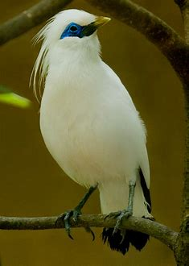

Burung, manuk-manuk, atau peksi adalah anggota kelompok hewan bertulang belakang (vertebrata) yang memiliki bulu dan sayap. Aves termasuk hewan ovipar berdarah panas[7] Jalak Bali (Leucopsar rothschildi) adalah sejenis burung pengicau berukuran sedang, dengan panjang lebih kurang 25 cm, dari suku Sturnidae. Ia turut dikenali sebagai Curik Ketimbang Jalak. Jalak Bali hanya ditemukan di hutan bagian barat Pulau Bali dan merupakan hewan endemik Indonesia. Burung ini juga merupakan satu-satunya spesies endemik Bali dan pada tahun 1991 dinobatkan sebagai lambang fauna Provinsi Bali. Kicauan jalak mimiliki suara yang khas berupa campuran siul yang memiliki jeda nada beberapa saat dan suara lengkingan. Burung ini tergolong burung bersuara ribut, dan berceloteh keras, terkadang meniru suara burung lainnya. Jalak bali menyukai habitat hutan mangrove, hutan rawa, hutan musim dataran rendah dan daerah savana. Penyebaran jalak bali secara alami hanya terdapat di Taman Nasional Bali Barat (TNBB). Selain itu, penyebaran jalak bali terdapat di daerah Tegal Bunder, Lampu Merah, Batu Gondang, Prapat Agung, Batu Licin, dan Teluk Brumbun. Perkawinan jalak bali di dalam penangkaran terjadi sepanjang tahun. Biasanya jalak bali yang telah bertelur dan menetaskan anaknya selama 14 hari akan bertelur kembali setelah anaknya berusia sekitar 4-5 minggu atau jarak waktu bertelur sekitar dua bulan. Di habitat alaminya termasuk burung yang suka terbang secara berombongan, pada musim kawin antara bulan September-Desember mereka terbang secara berpasangan sambil mencari makan. Satwa ini membuat sarang di dalam lubang- lubang pohon pada ketinggian 2,5–7 m dari tanah. Jalak bali mempunyai aktivitas harian yang sama, yaitu setelah matahari terbit yaitu pada pukul 05.00-05.30 WITA mereka mulai terbang secara berkelompok menuju tempat makan/minum, dan mereka kembali menuju tempat tidur sebelum matahari terbenam yaitu pada pukul 14.30 WITA. Kegiatan harian ini akan berhenti sama sekali pada pukul 18.45 WITA. Radius pergerakan hariannya bervariasi dari 3–10 km tergantung pada keadaan lingkungannya.
Ketika pertama kali diidentifikasi pada 1910, diperkirakan 300–900 ekor hidup di alam liar. Hasil sensus yang dilakukan sejak tahun 1974 sampai dengan 1986, menunjukkan keadaan perkembangan populasi yang tidak menggembirakan. Dari tahun 1974 sampai dengan 1981 terjadi peningkatan jumlah, tetapi sejak tahun 1983 terjadi penurunan populasi.[7] Populasi jalak bali di habitat alaminya yaitu di Taman Nasional Bali Barat selalu mengalami penurunan. Diketahui pada tahun 1984 jumlah jalak bali diperkirakan 125-180 ekor. Pada tahun 1988 jumlah jalak bali sekitar 37 ekor dan 12-18 ekor pada tahun 1990. Pada tahun 1998 telah didapatkan 10-14 ekor serta diperkirakan semuanya adalah jantan.[8] Data terakhir yang dikumpulkan oleh PEH Bali Barat pada tahun 2006 hanya ditemukan 6 ekor [9].Lalu, pada tahun 2009 Kenwrick (2009), mencatat di Pulau Nusa Penida tercatat sebanyak 65 individu dewasa dan 62 juvenile. Pada saat ini, tercatat 115 individu burung jalak ini.
© Copyright Ahmad Syauqi Raihan All Rights Reserved